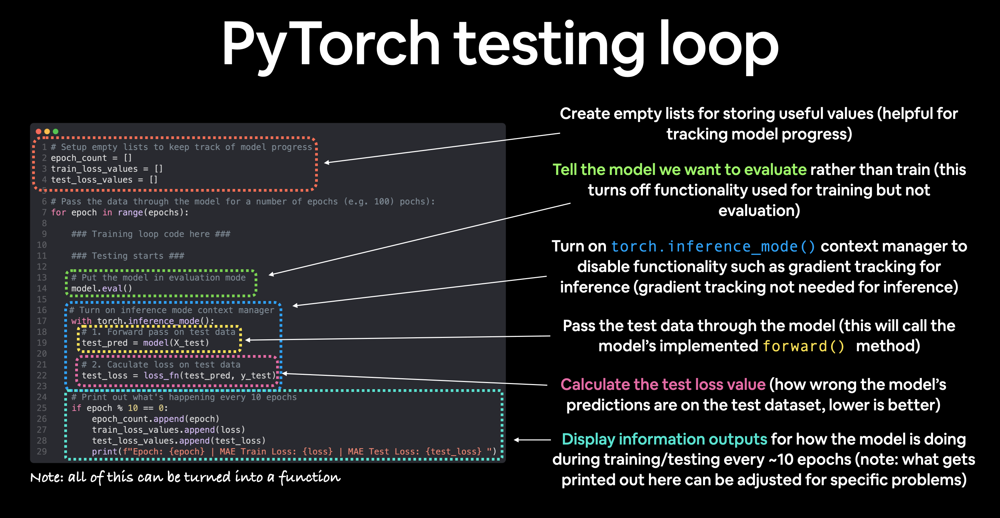

Workflow in ML#
Refer to Pytorch workflow

Topic |
Contents |
|---|---|
1. Getting data ready |
Data can be almost anything but to get started we’re going to create a simple straight line |
2. Building a model |
Here we’ll create a model to learn patterns in the data, we’ll also choose a loss function, optimizer and build a training loop. |
3. Fitting the model to data (training) |
We’ve got data and a model, now let’s let the model (try to) find patterns in the (training) data. |
4. Making predictions and evaluating a model (inference) |
Our model’s found patterns in the data, let’s compare its findings to the actual (testing) data. |
5. Saving and loading a model |
You may want to use your model elsewhere, or come back to it later, here we’ll cover that. |
1. Data (preparing and loading)#
Data in ML can be anything, but must be turned into numbers (normally represented in tensors)
Turn data to number#
Turning data to numbers is called Numerical encording

Split data into training and test sets#
Split |
Purpose |
Amount of total data |
How often is it used? |
|---|---|---|---|
Training set |
The model learns from this data (like the course materials you study during the semester). |
~60-80% |
Always |
Validation set |
The model gets tuned on this data (like the practice exam you take before the final exam). |
~10-20% |
Often but not always |
Testing set |
The model gets evaluated on this data to test what it has learned (like the final exam you take at the end of the semester). |
~10-20% |
Always |
Note
Should keep in mind the data explorer’s motto… “visualize, visualize, visualize!”
Think of this whenever you’re working with data and turning it into numbers, if you can visualize something, it can do wonders for understanding.
Machines love numbers and we humans like numbers too but we also like to look at things.
2. Build model#
PyTorch model building essentials#
PyTorch has four (give or take) essential modules you can use to create almost any kind of neural network you can imagine. They are
PyTorch module |
What does it do? |
|---|---|
Contains all of the building blocks for computational graphs (essentially a series of computations executed in a particular way). |
|
Stores tensors that can be used with |
|
The base class for all neural network modules, all the building blocks for neural networks are subclasses. If you’re building a neural network in PyTorch, your models should subclass |
|
Contains various optimization algorithms (these tell the model parameters stored in |
|
|
All |
import torch
from torch import nn
# Create a Linear Regression model class
class LinearRegressionModel(nn.Module): # nn.Module is almost everything in PyTorch (as neural network lego blocks)
def __init__(self):
super().__init__()
self.weights = nn.Parameter(torch.randn(1, # start with random weights (this will get adjusted as the model learns)
dtype=torch.float), # <- PyTorch loves float32 by default
requires_grad=True) # <- can we update this value with gradient descent?)
self.bias = nn.Parameter(torch.randn(1, # start with random bias (this will get adjusted as the model learns)
dtype=torch.float), # <- PyTorch loves float32 by default
requires_grad=True) # <- can we update this value with gradient descent?))
# Forward defines the computation in the model
def forward(self, x: torch.Tensor) -> torch.Tensor: # <- "x" is the input data (e.g. training/testing features)
return self.weights * x + self.bias # <- this is the linear regression formula (y = m*x + b)
Making predictions using torch.inference_mode()#
torch.inference_mode() is used when using a model for inference (making predictions).
torch.inference_mode() turns off a bunch of things (like gradient tracking, which is necessary for training but not for inference) to make forward-passes (data going through the forward() method) faster.
# Make predictions with model
with torch.inference_mode():
y_preds = model_0(X_test)
---------------------------------------------------------------------------
NameError Traceback (most recent call last)
Cell In[4], line 3
1 # Make predictions with model
2 with torch.inference_mode():
----> 3 y_preds = model_0(X_test)
NameError: name 'model_0' is not defined
3. Train model#
Creating a loss function and optimizer in PyTorch#
In ML loss function is also called cost function, objective function,… that is needed to minimize.
Function |
What does it do? |
Where does it live in PyTorch? |
Common values |
|---|---|---|---|
Loss function |
Measures how wrong your models predictions (e.g. |
PyTorch has plenty of built-in loss functions in |
Mean absolute error (MAE) for regression problems ( |
Optimizer |
Tells your model how to update its internal parameters to best lower the loss. |
You can find various optimization function implementations in |
Stochastic gradient descent ( |
Common optimizers:
SGD (stochastic gradient descent) optimizer
Adam optimizer
Creating an optimization loop in PyTorch#
We will create a training loop (and testing loop).
The training loop involves the model going through the training data and learning the relationships between the features and labels.
The testing loop involves going through the testing data and evaluating how good the patterns are that the model learned on the training data (the model never see’s the testing data during training).
Each of these is called a “loop” because we want our model to look (loop through) at each sample in each dataset.
PyTorch training loop#
For the training loop, we’ll build the following steps:
Number |
Step name |
What does it do? |
Code example |
|---|---|---|---|
1 |
Forward pass |
The model goes through all of the training data once, performing its |
|
2 |
Calculate the loss |
The model’s outputs (predictions) are compared to the ground truth and evaluated to see how wrong they are. |
|
3 |
Zero gradients |
The optimizers gradients are set to zero (they are accumulated by default) so they can be recalculated for the specific training step. |
|
4 |
Perform backpropagation on the loss |
Computes the gradient of the loss with respect for every model parameter to be updated (each parameter with |
|
5 |
Update the optimizer (gradient descent) |
Update the parameters with |
|

Note
The above is just one example of how the steps could be ordered or described. With experience you’ll find making PyTorch training loops can be quite flexible.
And on the ordering of things, the above is a good default order but you may see slightly different orders. Some rules of thumb:
Calculate the loss (
loss = ...) before performing backpropagation on it (loss.backward()).Zero gradients (
optimizer.zero_grad()) before stepping them (optimizer.step()).Step the optimizer (
optimizer.step()) after performing backpropagation on the loss (loss.backward()).
PyTorch testing loop#
As for the testing loop (evaluating our model), the typical steps include:
Number |
Step name |
What does it do? |
Code example |
|---|---|---|---|
1 |
Forward pass |
The model goes through all of the training data once, performing its |
|
2 |
Calculate the loss |
The model’s outputs (predictions) are compared to the ground truth and evaluated to see how wrong they are. |
|
3 |
Calulate evaluation metrics (optional) |
Alongisde the loss value you may want to calculate other evaluation metrics such as accuracy on the test set. |
Custom functions |
Notice the testing loop doesn’t contain performing backpropagation (loss.backward()) or stepping the optimizer (optimizer.step()), this is because no parameters in the model are being changed during testing, they’ve already been calculated. For testing, we’re only interested in the output of the forward pass through the model.

Note
Training loop and testing loop are normally performed together
In ML, epoch means step, like in MD.
Let’s put all of the above together and train our model for 100 epochs (forward passes through the data) and we’ll evaluate it every 10 epochs.
torch.manual_seed(42) # seed to make sure reproducing the same random number on different runs or machines
epochs = 100 # Set the number of epochs (how many times the model will pass over the training data)
# Create empty loss lists to track values
train_loss_values = []
test_loss_values = []
epoch_count = []
for epoch in range(epochs):
### Training
model_0.train() # Put model in training mode (this is the default state of a model)
y_pred = model_0(X_train) # 1. Forward pass on train data using the forward() method inside
loss = loss_fn(y_pred, y_train) # 2. Calculate the loss (how different are our models predictions to the ground truth)
optimizer.zero_grad() # 3. Zero grad of the optimizer
loss.backward() # 4. Loss backwards
optimizer.step() # 5. Progress the optimizer
### Testing
model_0.eval() # Put the model in evaluation mode
with torch.inference_mode():
test_pred = model_0(X_test) # 1. Forward pass on test data
test_loss = loss_fn(test_pred, y_test.type(torch.float)) # 2. Calculate loss on test data (note: predictions come in torch.float datatype, so comparisons need to be done with tensors of the same type
# Print out what's happening
if epoch % 10 == 0:
epoch_count.append(epoch)
train_loss_values.append(loss.detach().numpy())
test_loss_values.append(test_loss.detach().numpy())
print(f"Epoch: {epoch} | MAE Train Loss: {loss} | MAE Test Loss: {test_loss} ")
---------------------------------------------------------------------------
NameError Traceback (most recent call last)
Cell In[5], line 12
8 epoch_count = []
10 for epoch in range(epochs):
11 ### Training
---> 12 model_0.train() # Put model in training mode (this is the default state of a model)
14 y_pred = model_0(X_train) # 1. Forward pass on train data using the forward() method inside
15 loss = loss_fn(y_pred, y_train) # 2. Calculate the loss (how different are our models predictions to the ground truth)
NameError: name 'model_0' is not defined
4. Make a prediction with trained model (inference)#
We used it during training/testing loop.
There are three things to remember when making predictions (also called performing inference) with a PyTorch model:
Set the model in evaluation mode (
model.eval()).Make the predictions using the inference mode context manager (
with torch.inference_mode(): ...).All predictions should be made with objects on the same device (e.g. data and model on GPU only or data and model on CPU only).
model_0.eval() # 1. Set the model in evaluation mode
with torch.inference_mode(): # 2. Setup the inference mode context manager
model_0.to(device) # 3. setup device-agnostic, to make all on the same device
X_test = X_test.to(device)
y_preds = model_0(X_test)
5. Saving and loading a model#
For saving and loading models in PyTorch, there are three main methods you should be aware of (PyTorch saving and loading models guide):
PyTorch method |
What does it do? |
|---|---|
Saves a serialzed object to disk using Python’s |
|
Uses |
|
Loads a model’s parameter dictionary ( |
Note
As stated in Python’s pickle documentation, the pickle module is not secure. That means you should only ever unpickle (load) data you trust. That goes for loading PyTorch models as well. Only ever use saved PyTorch models from sources you trust.
Saving a PyTorch model’s state_dict()#
The recommended way for saving and loading a model for inference (making predictions) is by saving and loading a model’s state_dict().
call torch.save(obj, f) where obj is the target model’s state_dict() and f is the filename of where to save the model.
torch.save(obj=model_0.state_dict(), f=filename) # Save the model state_dict(), only saves the models learned parameters
Loading a saved PyTorch model’s state_dict()#
Since we’ve now got a saved model state_dict() at models/01_pytorch_workflow_model_0.pth we can now load it in using torch.nn.Module.load_state_dict(torch.load(f)) where f is the filepath of our saved model state_dict().
Why call torch.load() inside torch.nn.Module.load_state_dict()?
Because we only saved the model’s state_dict() which is a dictionary of learned parameters and not the entire model, we first have to load the state_dict() with torch.load() and then pass that state_dict() to a new instance of our model (which is a subclass of nn.Module).
Why not save the entire model?
Saving the entire model rather than just the state_dict() is more intuitive, however, to quote the PyTorch documentation (italics mine):
Tip
The disadvantage of this approach (saving the whole model) is that the serialized data is bound to the specific classes and the exact directory structure used when the model is saved…
Because of this, your code can break in various ways when used in other projects or after refactors.
So instead, we’re using the flexible method of saving and loading just the state_dict(), which again is basically a dictionary of model parameters.
Let’s test it out by created another instance of LinearRegressionModel(), which is a subclass of torch.nn.Module and will hence have the in-built method load_state_dit().
# Instantiate a new instance of our model (this will be instantiated with random weights)
loaded_model_0 = LinearRegressionModel()
# Load the state_dict of our saved model (this will update the new instance of our model with trained weights)
loaded_model_0.load_state_dict(torch.load(f=filename))
Improving a model (Hyperparameters tuning)#
When the model gives bad predictions, there are a few ways to try for making it better. See example here
Model improvement technique* |
What does it do? |
|---|---|
Add more layers |
Each layer potentially increases the learning capabilities of the model with each layer being able to learn some kind of new pattern in the data, more layers is often referred to as making your neural network deeper. |
Add more hidden units |
Similar to the above, more hidden units per layer means a potential increase in learning capabilities of the model, more hidden units is often referred to as making your neural network wider. |
Fitting for longer (more epochs) |
Your model might learn more if it had more opportunities to look at the data. |
Changing the activation functions |
Some data just can’t be fit with only straight lines (like what we’ve seen), using non-linear activation functions can help with this (hint, hint). |
Change the learning rate |
Less model specific, but still related, the learning rate of the optimizer decides how much a model should change its parameters each step, too much and the model overcorrects, too little and it doesn’t learn enough. |
Change the loss function |
Again, less model specific but still important, different problems require different loss functions. For example, a binary cross entropy loss function won’t work with a multi-class classification problem. |
Use transfer learning |
Take a pretrained model from a problem domain similar to yours and adjust it to your own problem. We cover transfer learning in notebook 06. |
Note
Because you can adjust all of these by hand, they’re referred to as hyperparameters.
And this is also where machine learning’s half art half science comes in, there’s no real way to know here what the best combination of values is for your project, best to follow the data scientist’s motto of “experiment, experiment, experiment”.